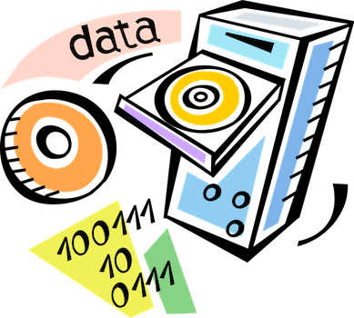

Can we build a reactive document in a single HTML file?
Yes (by standing on the shoulders of Observable).I don't think HTML is being used enough for scientific publishing.
People are using either full-blown publishing platforms, like Quarto, Typst and Overleaf, using interactive notebooks, like Jupyter, Pluto.jl and Observable, or wiki platforms like Obsidian Publish.
I think self-contained HTML files can provide a similar set of affordances, and prevent a lot of faffing around with tooling or 3rd-party platforms.
I'm going to try and demonstrate this, in this file, literate programming style.
Cells
First, we'll steal a trick from This page is a truly naked, brutalist html quine, and create a CSS class calledecho that will display style and script elements inline.
Now we'll import the Observable standard library and the Observable runtime, and bind them to window.
We'll define helper methods cell and observer that wrap some of the runtime API.
Now we'll declare a cell called counter that will emit a number every second.
The script id attribute must be the same as the name parameter passed to cell.
Now that we've created a our counter cell, we can create other cells that depend on it.
We'll import Hypertext Literal and use it to format the
counter value.
We'll import Observable Plot and use the counter value in the plot.
We should always store data in their own script elements, so that they can be easily referenced by other cells.
Inputs
We'll create a new cell typeviewof that works specifically with Observable Inputs.
It declares 2 reactive cells: NAME and viewof NAME - one for the value, and one for the DOM element itself.
Wiggle the range input and see another dependent cell update.
Mutability
Purely functional dataflow is great, but sometimes you just need to mutate state. We'll create a new cell typemutable. It registers a Mutable - an object that yields new Generator values when the value is mutated - in the runtime.
LaTeX, Markdown, GraphViz & more
What's the point if I can't render LaTeX, Markdown and GraphViz?SQLite
I've hosted the Chinook sample database on my website at https://maxbo.me/chinook.db. Now we'll use a sqlite3 WASM backed client to query it.

Python

Cell status
Observable'sInspector can apply an observablehq--running or an
observablehq--error class to the cell's div result element.
We'll style them appropriately: